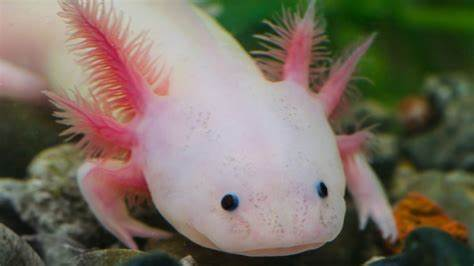

(Ambystoma mexicanum)
El ajolote es una especie de anfibio del genero Ambystoma. Es endémico del sistema lacustre de la Cuenca de México y ha tenido una gran influencia en la cultura mexicana. Se encuentra en peligro crítico de extinción por la pérdida de hábitat, introducción de peces exóticos, sobreexplotación, contaminación y su consumo como alimento. Es una especie neoténica, es decir, puede alcanzar la madurez sexual reteniendo sus características larvarias, es decir, no completando el proceso de metamorfosis al contrario que la mayoría de los anfibios.
Un ajolote adulto, a la edad de dieciocho a veintisiete meses, tiene una longitud entre 15 y 35 cm, siendo el más común un tamaño cercano a los 23 cm y siendo raro un tamaño mayor de 30 cm . Los ajolotes poseen características típicas de los renacuajos y las salamandras, que incluyen tres pares de branquias externas y una aleta caudal que se extiende desde detrás de la cabeza hasta la cloaca.89 Las branquias externas generalmente se pierden cuando las salamandras maduran hasta la edad adulta, pero el ajolote puede mantener esta característica (branquias externas);10 esto se debe a la evolución neoténica, en donde los ajolotes están mucho más adaptados al agua que otras especies de salamandras.
Alimentación
Su dieta es muy variada y en vida silvestre incluye pequeños peces, alevines y acociles. En cautiverio, se les alimenta comúnmente con gusanos tubifex, lombrices de tierra, larvas de tenebrios, y otros gusanos.
Distribución y hábitat
El ajolote es nativo del Valle de México, más concretamente del sistema de canales de Xochimilco, en la Ciudad de México; antes de que sus poblaciones se vieran fuertemente disminuidas el ajolote se distribuía por todo el complejo lagunar del valle, incluyendo los lagos de Texcoco y Chalco, incluso por Tlaxcala, en el municipio del Carmen Tequexquitla.
Coloración
Los ajolotes tienen cuatro genes de pigmentación; cuando mutan crean diferentes variantes de color. Los ajolotes salvajes son normalmente de color marrón con un matiz verde oliva y manchas doradas. Los seis colores de ajolotes más comunes derivados de una mutación son los siguientes:
Además, existe una amplia variabilidad individual en el tamaño, el número y la intensidad de las manchas doradas. Existen ejemplares con coloración modificada artificialmente como con la GFP.